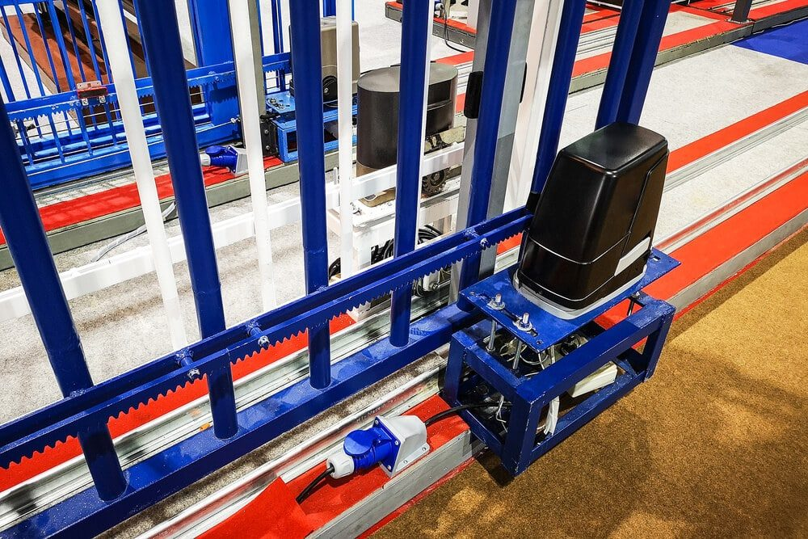

In This Guide
- An automatic gate opener adds convenience and tighter control over who comes in, and it works with most gate styles.
- The gate style comes first: single swing, double swing, and sliding gates each need a different kind of opener.
- Remotes and keypads are the two most common controls, and a keypad lets you change the access code at any time.
- Electric, solar, and battery backup power each suit different situations, so match the choice to how often the gate moves and how sunny your yard is.
If you already have a gate, or you are planning one, there is a question worth asking. How much easier would daily life be if the gate opened and closed on its own? An automatic gate opener answers that, and it takes the stop-and-get-out routine out of every trip.
This guide from Big Easy Fence explains what an opener does, the main types, and what to compare before you choose. It is a buying guide only. The automatic gate itself, its power supply, and its wiring are work for a qualified installer.
Why Add an Automatic Gate Opener
If you are not sure a gate opener is worth it, these are the everyday advantages people notice first.
Better Security and Privacy
A regular gate can be opened by almost anyone, and a simple latch or lock only goes so far. With an opener, you decide when the gate opens and closes. That control also gives you a better sense of who comes and goes, and many systems add built-in security features that keep working while you are away.
Everyday Convenience
Think about the usual routine: open the gate, get in the car, drive out, park, get out, close the gate, get back in, and finally leave. The routine gets old fast when you are in a hurry, dealing with an emergency, or standing in the rain. With an opener, you stay in the car, press a button, and drive away.
A Finished Look
Whatever your gate looks like, there is an opener made to fit it. A neat, working entry can make the whole property feel more complete.
Types of Gates and Openers
No two openers are the same, and the right one depends on the gate it has to move. Start with the gate style.
Single Swing Gates
A single swing gate is one panel hinged on one side, so one opener carries the whole load. Because it is supported on only one side, these gates tend to be lightweight. If yours is heavy, pick an opener rated for the full weight of the gate.
Double Swing Gates
Wider driveways usually use two panels that swing open from the center. Each panel normally needs its own opener. In some cases you can open just one panel with one opener when you do not need the full width.
Sliding Gates
Sliding gates work very differently. They do not hang from a hinge post. They roll sideways on wheels along a track, driven by a motor unit. That makes them a good match for tight spaces where a gate has no room to swing.

Ways to Control the Gate
You can trigger the gate in several ways, and the control you choose changes how the gate fits into your day.
Remote Controls
A remote is the most common option, and you can take it anywhere. Basic versions have simple open and close buttons, while advanced models add more features. Remotes only work within range of the gate, and some use Bluetooth or infrared, so ask about range before you buy.
Keypads
A keypad opens the gate when you enter a code. It suits anyone who does not want to carry a key or remote, and you can change the code whenever you like. Of the common controls, it is usually the most secure.
Add-On Options
Many systems can also work with an intercom or a phone app. Availability depends on the model, so ask your installer what fits your gate.
Electric, Solar, or Battery Backup Power
The last big decision is how the opener gets its power. Each option has strengths and tradeoffs, especially in a region where storms can knock out the grid.
| Power Source | Best For | Watch Out For |
|---|---|---|
| Electric (AC) | Gates that open and close many times a day | Needs a power supply run to the gate, and it stops working in an outage unless it has a backup |
| Solar | Sunny yards where running power is difficult | Heavy daily use may drain it faster than the panel can recharge it |
| Battery Backup | Keeping the gate working during storms and outages | The battery needs to be checked and replaced over time |
Connecting an opener to your home's power, or setting up its controls, should be done by a qualified installer and an electrician. This is not a weekend project.
What to Compare Before You Buy
Brand names matter less than fit. Whatever model you consider, run through this short list.
- Gate weight and width. The opener has to be rated for the weight and width of your specific gate.
- Daily use. A gate that cycles many times a day needs a heavier-duty unit than one used a couple of times.
- Obstruction sensing. A good opener stops or reverses when the gate meets a car, a person, or a pet.
- Power outage plan. Ask how the gate works when the power goes out, and whether it can be opened by hand.
- Local support. Pick a model with parts and service you can actually get nearby.
To see how the pieces fit together, our post on how automatic gates work walks through the system from remote to motor.
Work With an Installer
An automatic gate opener is a real investment, so the choice deserves care. A local installer can look at your gate, your driveway, and your daily routine, then recommend an opener that suits them. If you are also planning the gate itself, take a look at our residential fencing services or ask for a free estimate.
Thinking About an Automatic Gate?
Tell us about your driveway and gate, and we will help you sort out which type of opener makes sense.